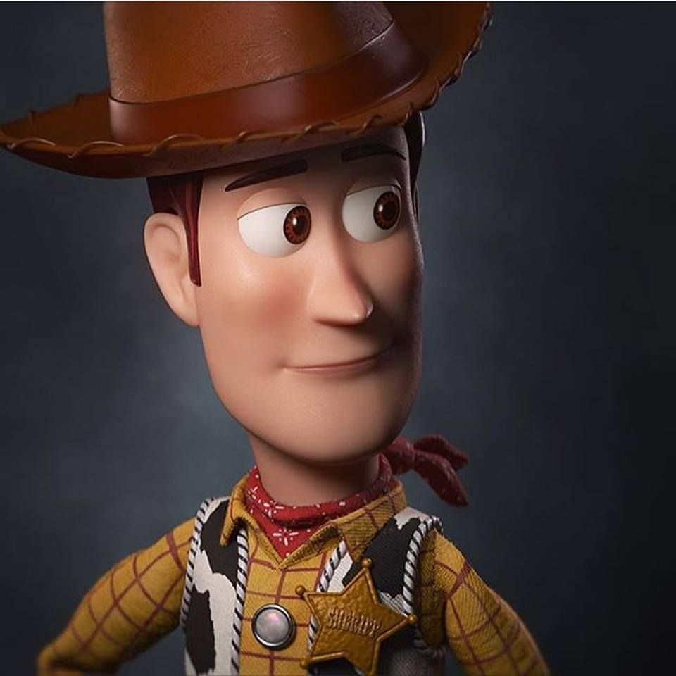
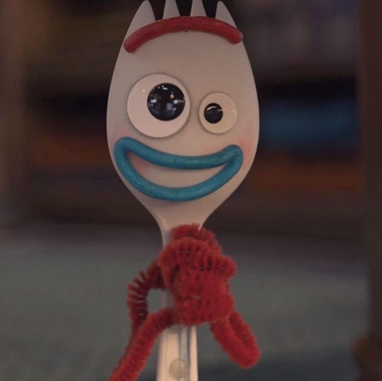

Characters
Woody played by Tom HanksHe is a vintage cowboy doll that originally belonged to a boy named Andy Davis.As Andy's favourite since kindergarten,woody served as the served as a the leader of Andy's toys,a position he upheld by looking out for each member of the group.When Andy enters adulthood and leaves for college,Woody is donated to a little girl named Bonnie Anderson.He remains with Bonnie for some time before choosing to become an owner-less antique devoted to helping lost toys find owners,alongside his girlfriend Bo Peep. |
Buzz Lightyear Played by Tim Allen
Played by Tim AllenBuzz Lightyear is a fictional character in the Toy Story franchise created by Disney and Pixar mainly voiced by Tim Allen. He is a sentient toy action figure based on the in-universe film and television franchise Buzz Lightyear of Star Command, a "Space Ranger" superhero. |
Forky Played by Tony HaleForky is a fictional character in the Toy Story franchise created by Disney and Pixar. His first appearance is in Toy Story 4, which was released in June 2019. In the Toy Story universe, he was made by Bonnie, who stuck googly eyes and red pipe cleaner onto a spork. |
Bo Peep Played by Annie Potts
Played by Annie PottsBo Peep is a fictional character appearing in the Disney—Pixar Toy Story franchise. The character is primarily voiced by Annie Potts. She appears in the first two films as a supporting character, portrayed as a love interest to the protagonist, Sheriff Woody. |